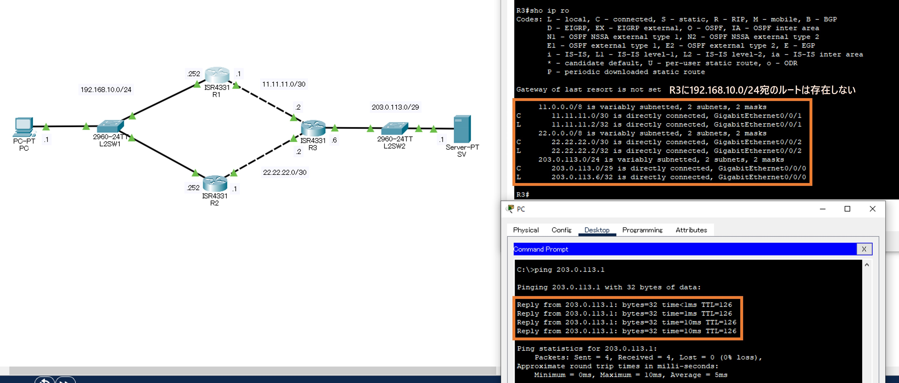
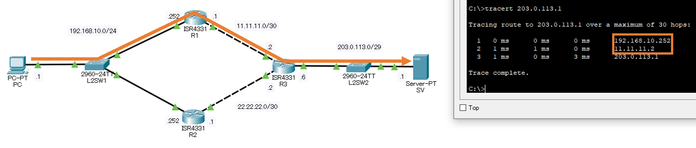

演習07HSRP
構成図

課題
まずは，R1-2にPAT・デフォルトルートの設定を行い，HSRPなしでPC⇔SVの通信を成立させてください。
次に，R1-2のG0/0/0にHSRPの設定を行い，R1をactive，R2をstandbyとするファーストホップの冗長化を実現して下さい。
なお，問題ファイルでは次の設定項目は完了しています。
- 機器配置
- PC・SVのIPアドレス付与・デフォルトゲートウェイ設定
- R1-3のホスト名設定・IPアドレス付与
- L2SW1-2のホスト名設定
- 機器間のケーブル接続
パラメータ
●IPアドレス
| ホスト名 | I/F名 | IPアドレス | サブネットマスク |
|---|---|---|---|
| R1 | G0/0/0 | 192.168.10.252 | 255.255.255.0 |
| G0/0/1 | 11.11.11.1 | 255.255.255.252 | |
| R2 | G0/0/0 | 192.168.10.253 | 255.255.255.0 |
| G0/0/1 | 22.22.22.1 | 255.255.255.252 | |
| R3 | G0/0/0 | 203.0.113.6 | 255.255.255.248 |
| G0/0/1 | 11.11.11.2 | 255.255.255.252 | |
| G0/0/2 | 22.22.22.2 | 255.255.255.252 |
| ホスト名 | IPアドレス | サブネットマスク | デフォルトGW |
|---|---|---|---|
| PC | 192.168.10.1 | 255.255.255.0 | 192.168.10.252 ⇒手順⑷で192.168.10.254に変更 |
| SV | 203.0.113.1 | 255.255.255.248 | 203.0.113.6 |
●ルーティング
| ホスト名 | 宛先IPアドレス・サブネットマスク | ネクストホップ |
|---|---|---|
| R1 | 0.0.0.0 / 0.0.0.0 | 11.11.11.2 |
| R2 | 0.0.0.0 / 0.0.0.0 | 22.22.22.2 |
●ACL
| ホスト名 | ACL番号 | アクション | 送信元IPアドレス・WCマスク |
|---|---|---|---|
| R1 | 1 | 許可 | 192.168.10.0 0.0.0.255 |
| R2 | 1 | 許可 | 192.168.10.0 0.0.0.255 |
●NAT（PAT）
| ホスト名 | 内部I/F | 外部I/F | 内部ローカルアドレス | 内部グローバルアドレス |
|---|---|---|---|---|
| R1 | G0/0/0 | G0/0/1 | ACL（ACL番号＝1） | インターフェース（I/F番号＝G0/0/1） |
| R2 | G0/0/0 | G0/0/1 | ACL（ACL番号＝1） | インターフェース（I/F番号＝G0/0/1） |
●HSRP
| ホスト名 | I/F名 | HSRPグループ番号 | 仮想IPアドレス | プライオリティ |
|---|---|---|---|---|
| R1 | G0/0/0 | 1 | 192.168.10.254 | 105 |
| R2 | G0/0/0 | 1 | 192.168.10.254 | 100 |
手順
⑴ R1-2のデフォルトルートをG0/0/1に設定する。
⑵ R1-2で，192.168.10.0/24を送信元とするパケットをG0/0/1のIPアドレスに変換するPATの設定を行う。
⑶ PC⇒SVへのpingに成功することを確認する。
⑷ パラメータを参照し，R1-2のG0/0/0でHSRPの設定を行う。
PCのデフォルトゲートウェイを仮想IPアドレス（192.168.10.254）に変更する。
⑸ HSRPのステータスを確認し，R1をactiveとしたHSRPグループが成立していることを確認する。
⑹ PC⇒SVへtracerouteを行い，R1を経由していることを確認する。
⑺ PC⇒SVへ連続pingを行いながら，R1のG0/0/0を無効化し，通信断ののち再びpingが成功することを確認する。
使用するコマンド【1】
standby ＜HSRPグループ番号＞ ip ＜仮想IPアドレス＞standby ＜HSRPグループ番号＞ priority ＜HSRPプライオリティ＞show standby
解説
HSRPは，複数のルータに同一の仮想IPアドレスを割当てることで，デフォルトゲートウェイの冗長化を実現する，Cisco社独自のプロトコルです。なお，同様の技術に標準化されたプロトコルであるVRRPがあり，これはCisco社以外の機器でも実装することが出来ます。
⑴ R1-2のデフォルトルートをG0/0/1に設定する。
まずはHSRPに入る前の下準備です。今回は，R1-2から左側を一つのLANとして，R1―R3間・R2―R3間をWAN回線に見立てています。したがって，R1・R2にそれぞれデフォルトルートとしてR3と接続しているI/Fを指定する必要があります。なお，point to pointのリンクであれば，I/Fをデフォルトルートとして設定することが出来ます（PPPoE回線を利用するときに，dialer I/Fを指定するのと同様です）。
R1# configure terminal
R1(config)# ip route 0.0.0.0 0.0.0.0 g0/0/1
R1(config)#
R2# configure terminal
R2(config)# ip route 0.0.0.0 0.0.0.0 g0/0/1
R2(config)#
⑵ R1-2で，192.168.10.0/24を送信元とするパケットをG0/0/1のIPアドレスに変換するPATの設定を行う。
R1(config)# access-list 1 permit 192.168.10.0 0.0.0.255
R1(config)# interface g0/0/0
R1(config-if)# ip nat inside
R1(config-if)# interface g0/0/1
R1(config-if)# ip nat outside
R1(config-if)# exit
R1(config)# ip nat inside source list 1 interface g0/0/1 overload
R1(config)#
R2(config)# access-list 1 permit 192.168.10.0 0.0.0.255
R2(config)# interface g0/0/0
R2(config-if)# ip nat inside
R2(config-if)# interface g0/0/1
R2(config-if)# ip nat outside
R2(config-if)# exit
R2(config)# ip nat inside source list 1 interface g0/0/1 overload
R2(config)#
⑶ PC⇒SVへのpingに成功することを確認する。
R3は192.168.10.0/24宛のルートを持っていないので，NAT（PAT）が有効になっていないと，ICMPの応答が返ってこないはずです。PC⇒SVへのpingに成功すれば，ここまでの設定は正しく行われているはずです。
⑷ パラメータを参照し，R1-2のG0/0/0でHSRPの設定を行う。
PCのデフォルトゲートウェイを仮想IPアドレス（192.168.10.254）に変更する。
ここからが，HSRPの設定です。HSRPグループ・仮想IPアドレス・HSRPプライオリティの設定を，R1-2のG0/0/0に行います。
HSRPグループとは，同一の仮想IPアドレスを割当てるルータの集まりのことです。HSRPプライオリティは，デフォルトは100で，0～255の間で設定でき，大きいルータがactiveとなります。
これに合せて，PCのデフォルトゲートウェイを，R1のG0/0/0の実IPアドレスである192.168.10.252から，仮想IPアドレスである192.168.10.254に変更してください。
これらの設定により，仮想IPアドレス「192.168.10.254」宛のパケットはactiveであるR1が担い，ダウンした際はactiveがR2に切り替り，引続き192.168.10.0/24にデフォルトゲートウェイが提供されるようになります。
R1(config)# interface g0/0/0
R1(config-if)# standby 1 ip 192.168.10.254
R1(config-if)# standby 1 priority 105
R1(config-if)# end
R1#
R2(config)# interface g0/0/0
R2(config-if)# standby 1 ip 192.168.10.254
R2(config-if)# end
R2#
⑸ HSRPのステータスを確認し，R1をactiveとしたHSRPグループが成立していることを確認する。
show standbyコマンドで，HSRPグループのステータスを表示することが出来ます。仮想IPアドレスが192.168.10.254で，R1がactive，R2がstandbyとなっていることを確認してください。
⑹ PC⇒SVへtracerouteを行い，R1を経由していることを確認する。
R1がactiveとなっているため，R1を経由していることを確認します。
⑺ PC⇒SVへ連続pingを行いながら，R1のG0/0/0を無効化し，通信断ののち再びpingが成功することを確認する。
HSRPグループに参加したルータは，helloパケットをマルチキャスト宛に送信し，activeルータの生存を定期的に確認しています。これが途切れると，activeルータがdownしたと判断し，standbyルータがactiveに切り替ります。
デフォルトでは3秒間隔でhelloパケットを送信し，10秒途切れると障害と判断する設定になっているので，切り替りまでには最大で13秒かかります。
PC⇒SVに連続pingを行いながら，R1のG0/0/0にshutdownコマンドを投入して無効化し，実際に10～13秒程度で通信が復旧するか確認しましょう。